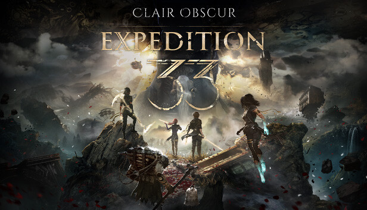
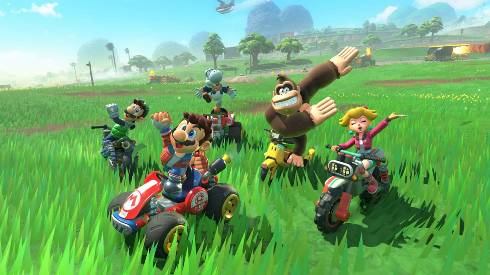
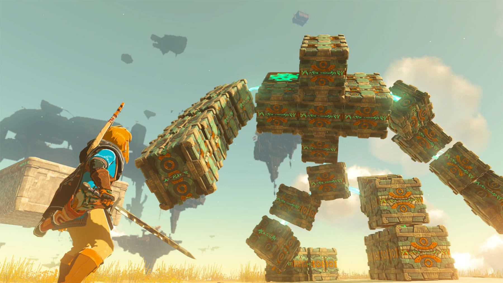
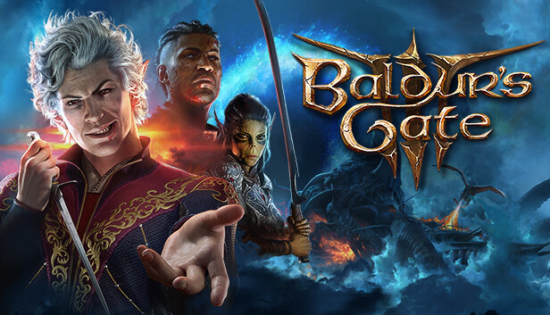
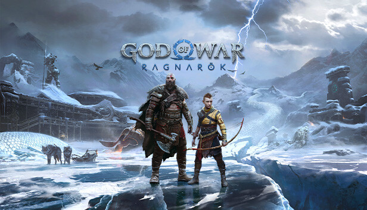
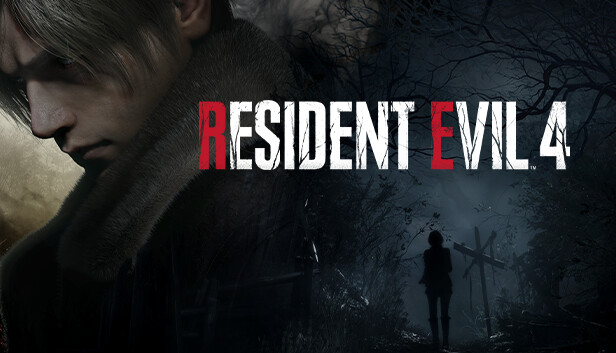
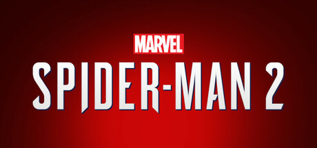

Reviews
Aqui ficam as análises dos jogos que eu joguei. A nota vai de 0 a 10 e é só a minha opinião, ok?
Hollow Knight: Silksong

Imagem: divulgação/Steam
Plataformas: PC, PS5, PS4, Xbox e Switch | Gênero: Metroidvania | Estúdio: Team Cherry
Nota: 9.5
Esperei muito tempo por esse jogo e valeu a pena. Agora a gente joga com a Hornet, que é muito mais rápida que o cavaleiro do primeiro jogo, então as lutas ficam bem mais dinâmicas. O mapa é gigante e cheio de segredo.
A arte e a música continuam lindas. O único problema é que o começo é bem difícil, morri muitas vezes nos primeiros chefes. Mas se você gosta do estilo, tem que jogar.
Pontos positivos
- Combate rápido
- Arte e música muito bonitas
- Mapa enorme
Pontos negativos
- Começo muito difícil
- Perder dinheiro quando morre
O que a IGN achou
A Bárbara Castro, da IGN Brasil, jogou mais de 46 horas e amou o jogo, mesmo achando muito difícil. Ela nunca tinha jogado o primeiro Hollow Knight e disse que dá para entender a história sem ele, só vendo um resumo no YouTube.
Ela elogia o mapa de Fiarlongo (maior que o do primeiro jogo), os personagens que aparecem pelo caminho, como Shakra, Sherma e Garmond, e a quantidade de chefes, que passa de 40. A trilha sonora e o clima sombrio também são destaques.
As críticas são os chefes que só jogam um monte de inimigos menores na arena, o dano alto até dos inimigos comuns e os bancos de descanso longe dos chefes, o que faz você chegar na luta já com pouca vida.
“esse metroidvania é igual a vida: difícil, mas ainda repleto de momentos felizes”
Fonte: CASTRO, Bárbara. Hollow Knight: Silksong - Review. IGN Brasil, 15 set. 2025. Disponível em: br.ign.com.
Clair Obscur: Expedition 33

Imagem: divulgação/Steam
Plataformas: PC, PS5 e Xbox Series | Gênero: RPG por turnos | Estúdio: Sandfall Interactive
Nota: 9.0
Eu não costumo jogar RPG por turnos, mas esse me pegou. Mesmo sendo por turnos, você precisa apertar o botão na hora certa para desviar e contra-atacar, então nunca fica parado esperando.
A história é muito boa e tem umas reviravoltas que eu não esperava. Às vezes eu me perdia no mapa porque não tem muita indicação de para onde ir, mas no geral é um dos melhores jogos que joguei.
Pontos positivos
- Combate diferente
- História emocionante
- Visual muito bonito
Pontos negativos
- Fácil se perder no mapa
- Algumas lutas difíceis do nada
O que a IGN achou
Nota da IGN: 9
A Vika Rosa elogiou a história emocionante, o sistema de batalha criativo e a direção de arte. Para ela, o jogo prova que RPG por turnos ainda pode inovar quando mistura ação em tempo real, e é uma experiência madura que merece ser jogada.
Fonte: ROSA, Vika. Clair Obscur: Expedition 33 - Review. IGN Brasil, 23 abr. 2025. Disponível em: br.ign.com.
Mario Kart World

Plataforma: Nintendo Switch 2 | Gênero: Corrida | Estúdio: Nintendo
Nota: 8.5
A novidade é que as pistas são ligadas umas nas outras, como um mundo aberto, e agora são 24 pilotos por corrida. O modo Knockout Tour, onde os últimos vão sendo eliminados, é muito divertido.
Jogar com os amigos é a melhor parte. O modo livre é meio vazio e o jogo só tem no Switch 2, o que é ruim para quem ainda não comprou o console novo.
Pontos positivos
- 24 pilotos na corrida
- Knockout Tour
- Ótimo para jogar com amigos
Pontos negativos
- Modo livre vazio
- Só tem no Switch 2
O que a IGN achou
Nota da IGN: 8.5
Para a Maria Eduarda Cury, o mundo conectado é colorido e as pequenas mudanças nas mecânicas deixaram o Grande Prêmio mais frenético. O ponto fraco é que o mundo aberto é pouco aproveitado, então o jogo não chega a ser a grande revolução da série.
Fonte: CURY, Maria Eduarda. Mario Kart World - Review. IGN Brasil, 9 jun. 2025. Disponível em: br.ign.com.
The Legend of Zelda: Tears of the Kingdom

Plataforma: Nintendo Switch | Gênero: Aventura | Estúdio: Nintendo
Nota: 10
Achei que seria só um Breath of the Wild 2, mas é muito mais. Agora o Link consegue grudar objetos uns nos outros e montar carros, pontes, aviões e o que mais a sua cabeça imaginar. Passei horas só inventando coisa.
Além do mapa de Hyrule, tem as ilhas no céu e um subterrâneo enorme e escuro. É o tipo de jogo em que você sai para fazer uma missão e acaba descobrindo cinco coisas no caminho.
Pontos positivos
- Liberdade para criar
- Mundo gigante
- Muita coisa para descobrir
Pontos negativos
- Armas quebram rápido
- Cai o FPS em algumas partes
O que a IGN achou
Nota da IGN: 10
A Bárbara Castro deu nota máxima. Ela destaca as novidades, a história que vai sendo revelada aos poucos, as ilhas no céu que dão liberdade para explorar, a trilha sonora e a Zelda finalmente tendo mais destaque. Ela também comenta que é fácil passar das 100 horas de jogo.
Fonte: CASTRO, Bárbara. The Legend of Zelda: Tears of the Kingdom - Review. IGN Brasil, 12 jun. 2024. Disponível em: br.ign.com.
Elden Ring

Imagem: divulgação/Steam
Plataformas: PC, PS4, PS5 e Xbox | Gênero: RPG de ação | Estúdio: FromSoftware
Nota: 9.5
Foi o primeiro jogo da FromSoftware que eu consegui zerar. Como o mundo é aberto, quando um chefe está muito difícil dá para ir explorar outro lugar, ficar mais forte e voltar depois. Isso ajuda muito quem está começando.
Os chefes são incríveis e alguns lugares são de tirar o fôlego. Mas a história é bem confusa, e eu precisei ver vídeo no YouTube para entender o que estava acontecendo.
Pontos positivos
- Mundo aberto bonito
- Chefes marcantes
- Muitas formas de montar o personagem
Pontos negativos
- História difícil de entender
- Alguns chefes são injustos
O que a IGN achou
Nota da IGN: 9.5
O Jeancarlos Mota diz que o jogo cumpre o que promete: um RPG de ação no estilo souls da FromSoftware, com um mundo enorme e uma história sombria que teve participação de George R.R. Martin. Segundo ele, é para quem gosta de fantasia e desafio, com muita batalha épica, exploração e bastante sofrimento.
Fonte: MOTA, Jeancarlos. Elden Ring - Review. IGN Brasil, 2 dez. 2024. Disponível em: br.ign.com.
Baldur's Gate 3

Imagem: divulgação/Steam
Plataformas: PC, PS5 e Xbox Series | Gênero: RPG | Estúdio: Larian Studios
Nota: 9.5
É baseado em Dungeons & Dragons, então tudo depende de rolar dados. O legal é que o jogo deixa você resolver as coisas do seu jeito: lutando, conversando, roubando ou até convencendo o chefe a desistir da luta.
Os personagens do grupo são muito bem escritos e cada um tem sua própria história. O combate por turnos demora para pegar o jeito, e o último ato tem alguns bugs, mas mesmo assim é um RPG gigante.
Pontos positivos
- Escolhas que mudam tudo
- Personagens muito bons
- Dá para jogar em cooperativo
Pontos negativos
- Difícil no começo
- Bugs no final
O que a IGN achou
Nota da IGN: 9.5
A Maria Eduarda Cury elogiou muito o roteiro, os gráficos e os personagens. Ela gostou de como o combate deixa você tentar praticamente qualquer ideia, desde que faça sentido na situação, e acha que o jogo mostra que RPG pode ser acessível para todo tipo de jogador.
Fonte: CURY, Maria Eduarda. Baldur's Gate III - Review. IGN Brasil, 5 jul. 2024. Disponível em: br.ign.com.
God of War Ragnarök

Imagem: divulgação/Steam
Plataformas: PS4, PS5 e PC | Gênero: Ação e aventura | Estúdio: Santa Monica Studio
Nota: 9.0
Continua a história do Kratos com o filho, Atreus, que agora está mais velho e quer tomar as próprias decisões. A relação dos dois é o melhor do jogo, e tem cenas que me deixaram bem emocionado.
O combate com o machado e as lâminas continua muito bom. A única coisa chata é que tem partes em que você joga com outro personagem e elas são mais lentas que o resto.
Pontos positivos
- História emocionante
- Combate pesado e divertido
- Gráficos muito bonitos
Pontos negativos
- Algumas partes lentas
- Personagens falam a solução dos puzzles
O que a IGN achou
Nota da IGN: 10
O Jeancarlos Mota deu nota 10 e achou o jogo maior e melhor que o God of War de 2018. Ele conta que tinha dúvidas se a continuação ia superar o anterior, mas mudou de ideia. Para ele, é provavelmente a melhor aventura do Kratos e um ótimo fechamento da fase nórdica com o Atreus.
Fonte: MOTA, Jeancarlos. God of War Ragnarok - Review. IGN Brasil, 3 nov. 2022. Disponível em: br.ign.com.
Astro Bot

Plataforma: PS5 | Gênero: Plataforma | Estúdio: Team Asobi
Nota: 9.0
Um jogo de plataforma super fofo, em que você controla um robozinho que precisa salvar os amigos espalhados pela galáxia. Cada fase tem uma ideia nova, e usa muito bem a vibração e os gatilhos do controle do PS5.
Muitos dos robôs que você salva são homenagens a personagens de outros jogos do PlayStation, o que é muito legal de encontrar. É curto e não é muito difícil, mas é divertido do começo ao fim.
Pontos positivos
- Fases criativas
- Usa bem o controle do PS5
- Divertido para todas as idades
Pontos negativos
- Meio curto
- Fácil demais em várias fases
O que a IGN achou
Nota da IGN: 9
O Vitor Conceição achou o jogo uma homenagem nostálgica à história do PlayStation. Ele elogia as fases bonitas, os power-ups e as lutas criativas contra chefes. A crítica é que os vilões não marcam muito, o que deixa o jogo um pouco abaixo dos melhores de Mario, Donkey Kong e Crash.
Fonte: CONCEIÇÃO, Vitor. Astro Bot - Review. IGN Brasil, 5 set. 2024. Disponível em: br.ign.com.
Resident Evil 4 (Remake)

Imagem: divulgação/Steam
Plataformas: PC, PS4, PS5 e Xbox Series | Gênero: Terror e ação | Estúdio: Capcom
Nota: 9.0
O Leon vai para um vilarejo na Europa resgatar a filha do presidente, e é claro que dá tudo errado. O remake deixou o jogo mais sombrio e com mais clima de terror que o original, mas sem perder a ação.
Agora dá para aparar os ataques com a faca, o que deixa as lutas mais estratégicas. Gostei bastante de gerenciar a maleta de itens. Algumas partes com a Ashley ainda são um pouco chatas.
Pontos positivos
- Clima de terror
- Tiroteio muito bom
- Respeita o jogo original
Pontos negativos
- Partes com a Ashley
- Faca quebra muito rápido
O que a IGN achou
Nota da IGN: 9.5
Para o Jeancarlos Mota, é um jogo de ação excelente, mesmo sem ter o impacto que o RE4 original teve na indústria e sem mudar o jeito de fazer remakes como o RE2 fez. Ele destaca as criaturas, a história cheia de ação e as várias melhorias em relação ao original, com um clima mais sombrio.
Fonte: MOTA, Jeancarlos. Resident Evil 4 - Review. IGN Brasil, 14 maio 2024. Disponível em: br.ign.com.
Marvel's Spider-Man 2

Imagem: divulgação/Steam
Plataformas: PS5 e PC | Gênero: Ação e aventura | Estúdio: Insomniac Games
Nota: 8.5
Agora você joga com os dois Homens-Aranha, o Peter e o Miles, e dá para trocar entre eles andando pela cidade. Balançar pelas teias em Nova York continua sendo uma das melhores sensações dos games, e as asas de teia deixam tudo ainda mais rápido.
O Venom é um ótimo vilão. A história, porém, acaba meio corrida no final, e as missões secundárias são parecidas com as do primeiro jogo.
Pontos positivos
- Andar pela cidade é muito bom
- Dois heróis jogáveis
- Venom
Pontos negativos
- Final corrido
- Missões secundárias repetitivas
O que a IGN achou
Nota da IGN: 9
O João Paes diz que é a maior aventura do Peter e do Miles até agora e elogia muito o Venom, que ele considera a melhor versão do vilão já feita. O ponto negativo é que a jogabilidade fica repetitiva depois de um tempo, mas o carisma dos personagens segura o jogo.
Fonte: PAES, João. Spider-Man 2 - Review. IGN Brasil, 25 out. 2023. Disponível em: br.ign.com.